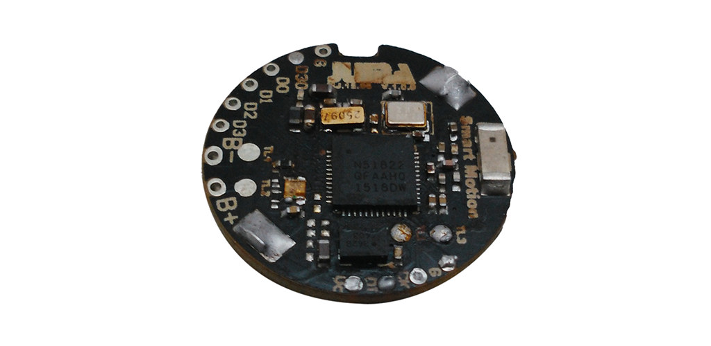
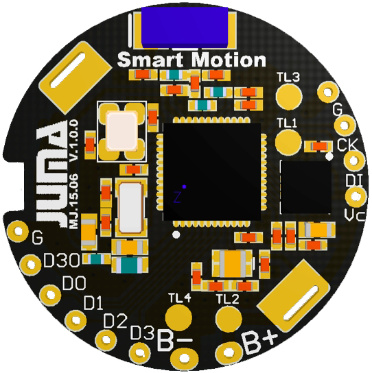
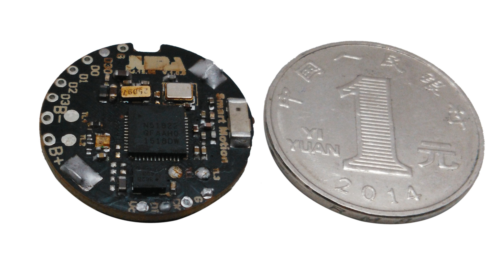
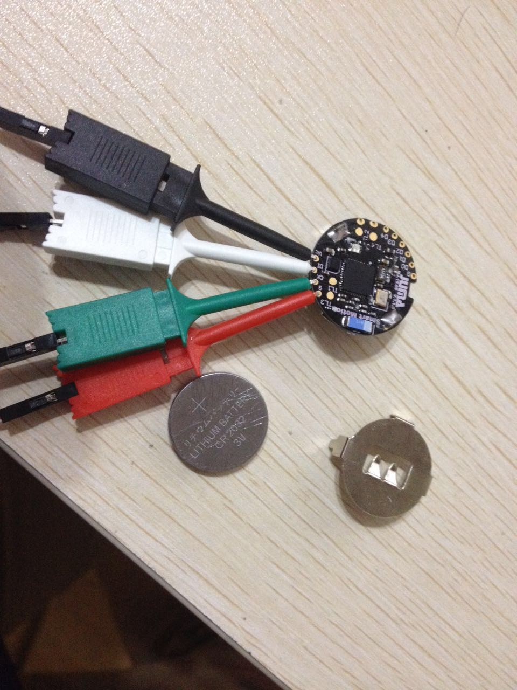

设计初衷
在一些运动或者是运动检测场合，需要的外设资源往往很单一，很多情况下都是只要一个三轴运动传感器就可以了，但是目前市面上三轴的模块不少，蓝牙的模块也不少，但是两者结合的模块却很少，甚至是没有，而在运动检测领域中，将数据实时的传输回来以供其他设备处理的需求却是实际存在的。为了解决这种问题，专门设计了在运动领域中的SMP模块。
应用场景
SMP主要在一些运动监测领域。
SMP具有较小的体积，几乎可以放置于任何的设备中，比如钥匙扣，衣帽，书包，口袋中，基本上不会占据任何的地方。 然而其功能强大，可用于检测运动状态，实现计步器，运动量检测，睡眠质量等等的运动监测领域。
片上资源:
01. nRF51822 超低功耗蓝牙SOC芯片ARM Cortex-M0
02. 256K FLASH / 16K RAM
03. 片上存储空间 (10K to 15K)
04.
ST LIS2DH12 超低功耗加速度计/陀螺仪 (运动传感器)
05. 高精度(+-0.1℃) 热敏电阻 (温度传感器)
06. RGB三色LED
07. 高精度32.768kHz时钟芯片
08. 5个模数兼容扩展GPIO / I2C
09. CR2032纽扣电池直接供电（各地商店有售），超低功耗休眠状态可持续工作一年以上
使用介绍
传感器数据可以通过超低功耗蓝牙传输到手机，速率高达200Hz。亦可实现数据本地存储，在需要的时候唤醒上传。
使用者可以自行对开发板进行编程，通过SDK里面提供的移动端调试工具进行数据交互，具体烧录方法，参看
开发指南.
我们也提供完整的示例源代码，例如：通过手机读取开发板上加速度传感器的实时数据等。


